Next: Node Types Up: CalculiX CrunchiX USER'S MANUAL Previous: Mesh refinement of a Contents
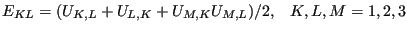 |
(2) |
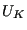
are the displacement components in the material frame of reference and repeated indices imply summation over the appropriate range. In a linear analysis, this reduces to the familiar form:
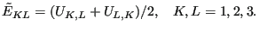 |
(3) |
The deviatoric elastic left Cauchy-Green tensor is defined by ([90]):
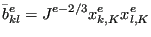 |
(4) |
where 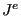 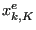
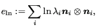 |
(5) |
where
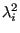 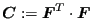 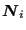 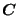 are
obtained from the eigenvectors
are
obtained from the eigenvectors
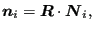 |
(6) |
where
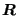 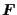 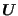 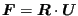
The stress measure consistent with the Lagrangian strain is the second
Piola-Kirchhoff stress
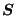 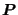 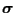
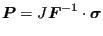 |
(7) |
and
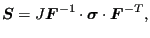 |
(8) |
where
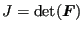
The treatment of the thermal strain depends on whether the analysis is
geometrically linear or nonlinear. For isotropic material the thermal strain
tensor amounts to
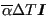 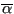 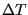 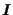
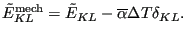 |
(9) |
In a nonlinear analysis the thermal strain is subtracted from the deformation gradient in order to obtain the mechanical deformation gradient. Indeed, assuming a multiplicative decomposition of the deformation gradient one can write:
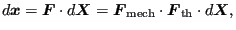 |
(10) |
where the total deformation gradient
is written as the
product of the mechanical deformation gradient and the thermal deformation
gradient. For isotropic materials the thermal deformation gradient can be
written as
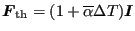
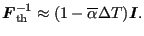 |
(11) |
Therefore one obtains:
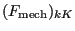 |
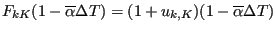 |
||
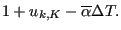 |
(12) |
Based on the mechanical deformation gradient the mechanical Lagrange strain is calculated and subsequently used in the material laws:
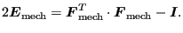 |
(13) |
Since the stretches 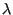 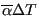 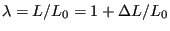
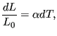 |
(14) |
leading to
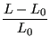 |
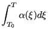 |
||
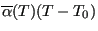 |
|||
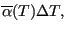 |
(15) |
from which
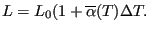 |
(16) |
Here, 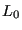 is the temperature for which the specimen length is
is the temperature for which the specimen length is
Notice that the same approach is taken in CalculiX for the calculation of the corotational logarithmic strain needed for an Abaqus User Material Routine. First, the thermal strain is subtracted from the total stretch to obtain the mechanical stretch and then the corational logarithmic mechanical strain is built:
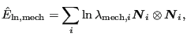 |
(17) |
In Abaqus, however, it is obtained according to:
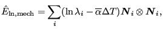 |
(18) |
which implies
leading to
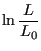 |
|||
| (20) |
or
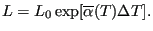 |
(21) |
This establishes an exponential expansion relationship. This is fine, as long as the thermal strain was also measured according to Equation(19), i.e. with reference to the actual length. The latter approach, used by a lot of Finite Element codes requires linear expansion coefficients for linear calculations (using linear strain) and exponential ones for nonlinear geometric calculations (using logarithmic strain). The approach in CalculiX avoids this.